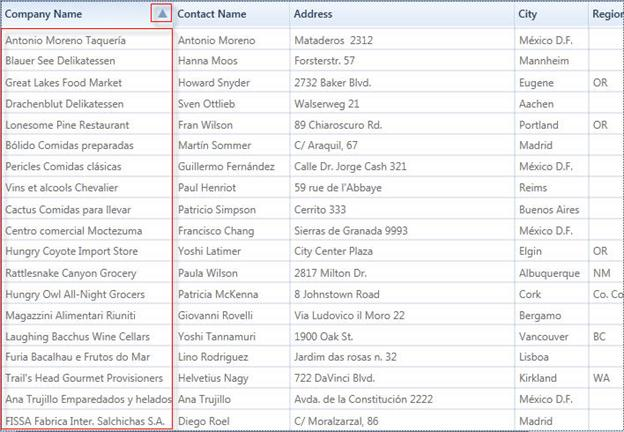

Custom sorting helps you to sort the records of the selected field values depending on your needs. It also allows you to sort the data against one or more columns in the GridDataControl.
The custom sorting sorts the values using custom sorting logic. To perform the custom sorting, you need to hook the SortColumnChanging or SortColumnChangingCommand event and pass the custom sorting logic to the CustomComparer.
To create a custom comparer to implement the custom sorting logic, you need to derive the logic from IComparer<object> and ISortDirection. The custom sorting is performed by comparing the values of particular columns. When grouping is applied, the custom sorting can be performed by comparing the Group keys.
Example Scenario
The following code examples illustrate how to perform the custom sorting for the names in the Company Name column according to the string length of the names.
To enable the custom sorting, hook the SortColumnsChanging event.
[C#] this.dataGrid.Model.Table.SortColumnsChanging += new GridDataSortColumnsChan gingEventHandler(Table_SortColumnsChanging); |
Set the comparer for the column on which the data needs to be sorted using the custom sorting logic. Here, the comparer is assigned to CompanyName.
|
[C#]
//This method will be hooked when clicking the header
ntArgs args)
//Passing the custom sort logic to CustomComparer
|
Check the direction of the sorting by using the SortDirection property of the ListSortDirection class. The Compare method of the IComparer interface uses two parameters to compare the length of the string.
|
[C#]
public class CustomerInfo : IComparer<Object>, ISortDirection
if (x.GetType() == typeof(Customers))
//While Grouping
SortDirection.
|
The following screenshot displays the Company Name column with the sorted names according to their length.

Figure 171. Custom Sorting by “Company Name” header according to the string length